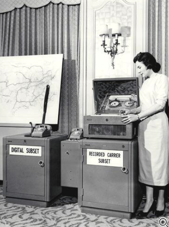
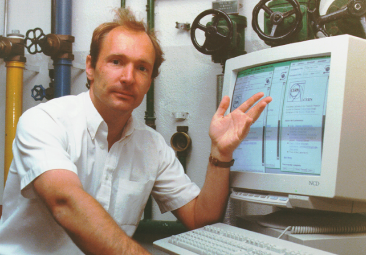
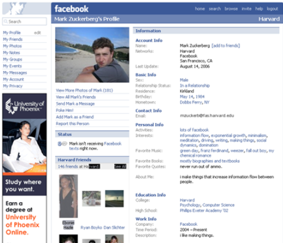
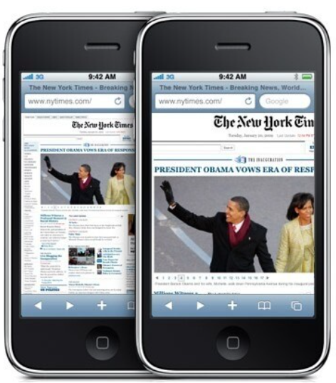

| History of the Internet | Year |
|---|---|
| Russia became the worlds leader in technology when they launched the satellite, Sputnik. | 1957 |
The Cold War was at its height and huge tensions existed between North America and the Soviet Union. Both superpowers were in possession of deadly nuclear weapons, and people lived in fear of long-range surprise attacks. The US realised it needed a communications system that could not be affected by a Soviet nuclear attack. Back at that time they developed these really large computers and expensive machines exclusively used by military scientists and university staff. (Science-and-Media-Museum, 2023) |
1950 |
| To meet the demands of the U.S. Military researchers at Bells Labs developed a modem which converted digital signals to electricals signals and back, enabling communication between computers. (HistoryofInformation, 2023)  |
1958 |
| The American Nation Standards Institute developed character encoding format for text data in computers. (Loshin, 2023) | 1963 |
| First development of Host-to-Host network interaction was introduced. It was developed by APRA (Advanced Research Projects Agency) of the Department of Defence. The agency realized that the computers that were increasingly popping up in offices, universities and military bases across the world and would be more useful if they could send data to each other over long distances. The aim was to develop transistors and transmitters to fit into smaller devices for convenient internet usage for the general public | 1969-1970 |
| The development of TCP (Transmission Control Protocol) was adapted by researchers and technologists in order for different machines and networks from across the world to assemble data pockets. This activity caused an explosion on the internet. | 1980 |
| The network grew from 2,000 hosts to 30,000. People were sending messages to each other, swapping files and reading news, but the dial in to the system needed to be made more efficient and easier to use. | 1986-1987 |
| Tim Berners-Lee was a British computer scientist, worked at the CERN (the international particle-research laboratory) in Geneva who proposed a new way of structuring and linking all the information available on CERN’s computer network, making it quick and easy to access. His concept for a ‘web of information’ would ultimately become the World Wide Web.  | 1989 |
| With the introduction of personal computers and the Mosaic browser the demand for commercial internet usage increased and with that the web browser was introduced, which followed the point-and-click approach and is now a widely used operation for the Internet users. People started to discover how easy it was to create their own HTML web pages and with that the number of websites grew from 130 in 1993 to over 100,000 at the starts of 1996. At this stage the World Wide Web had around 10 million users world-wide. | 1993 |
| First Online Newspaper The Telegraph |
1995 |
| Internet could be accessed from a PC using a dial up connection which involved telephone wires and connection was delivered through beeping sounds. The speed was extremely low. Internet access was limited and it was cheaper and faster to use at night. Web designers were rare and websites were mostly text based. There were no tabs and no search bars. | 2000 |
Companies and individuals that used internet, started to realise that they were able to use internet as a business tool to promote and sell their business. With development of WordPress it became easier to create websites without coding skills. And then came social media such as Facebook, LinkedIn, Youtube and MySpace.  |
2003-2006 |
Mobile internet and the first iPhone came out, with its own internet browser. This was a real breakthrough and the trend to make elements and features more realistic spread from mobile to web design. Humanity was able to communicate from across the globe through calls and videos.  |
2007-2010 |
| Ethan Mercotte introduced the concept of responsive web design and with this the visual look of web and mobile web pages became quite similar. Simplifying became trendy, solid colors, minimum number of lines and a lot of clear space. | 2010-2017 |
Half of the world’s population was online. Laptops and desktop computers accounted for 56% of all web traffic. The speed of the internet usage, the security improvements, and the growth of online businesses and online shopping such as Amazon and eBay has evolved massively. Social Media has boomed and with time new apps have been developed such as Instagram, TikTok, Tinder and the old ones such as Google+ and Yahoo Messenger have twiddled away. |
2017 |
| Fibre to the Home has multiplied the speed of the internet. 5G Mobile network connections have improved the speed on mobile devices. Online collaborations tools have been developed such as Microsoft Teams and Zoom. Cash Transfer tools such as Venmo, Revolut and other banking apps. | 2020 |
The internet plays a significant role in our everyday lives. It is the most rapidly evolved and widely used technology in the world. As of right now, there are 4.66 billion users of the internet that is up to 60 percent of the whole global population.